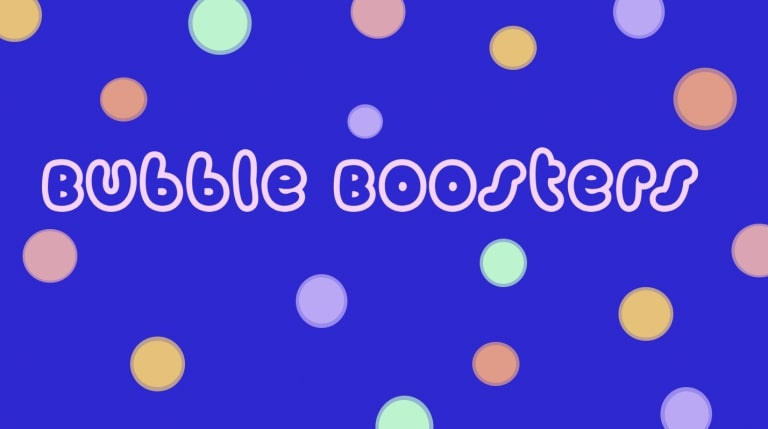
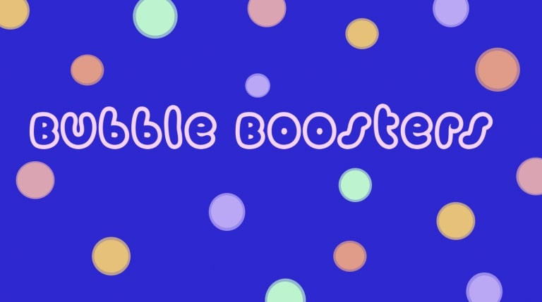

Branding

The Museum of...
This project is aimed to design and construct a museum. The Float Museum is a conceptual idea that offers people a place to relax and appreciate art related to the word and action "float". To help viewers relax and get away from fast paced New York.
Bubble Boosters
Developing a new product from two existing ones. In doing so we combined boba tea and herbal medicines. (Phytomedicine) This was done to reinvent the idea of boba which is usually perceived as a sugary and unhealthy drink. Thus, Bubble Boosters was created.
Bubble Boosters

